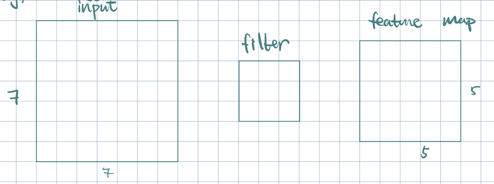
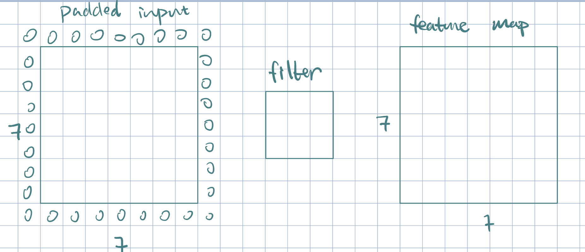
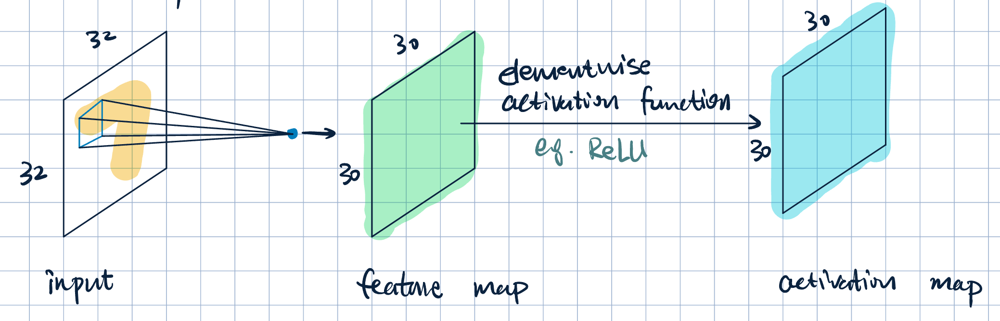
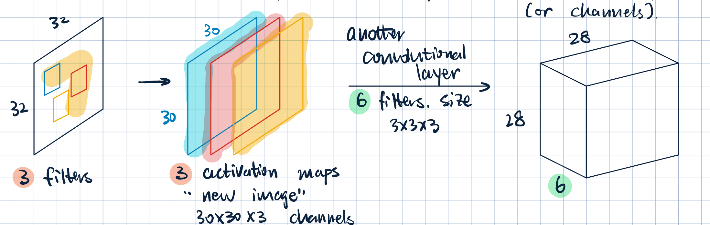
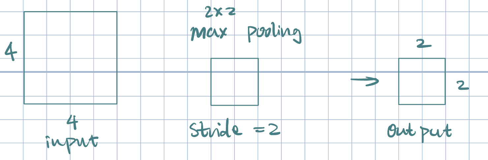
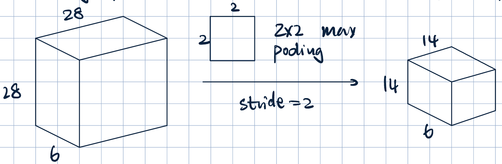
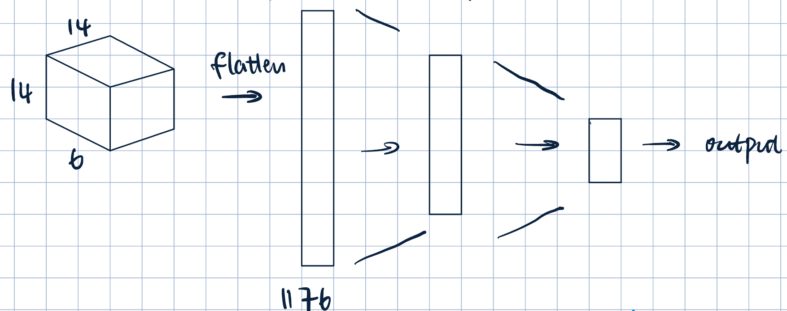

11 Convolutional Neural Networks
Neural Networks
CNNs
Image Processing
Deep Learning
This lecture discusses the architecture and functioning of Convolutional Neural Networks (CNNs), including their layers, operations, and applications in image processing and computer vision. It also covers the concept of pooling layers and their role in reducing dimensionality.
Introduction to the MNIST Dataset and CNNs
Each image is a \(32\times32\) grayscale image (\(0-255\)).
A flat representation of the image: \[\va x=\mqty[x_1,x_2,\dots,x_{1024}]\]
Problem with flat representation:
- Ignore spatial structure
- Subsceptible to translational error
Goal: preserve the spatial structure of the task by capturing relationships among neighboring pixels.
Ideas:
- Laern feature representations based on small patches.
- Apply patch-based feature representations across the entire image.
Building blocks of CNN:
- Convolutional layers
- Activation layers
- Pooling layers
- Fully connected layers
Convolutional Layer

- Neurons that maps a \(3\times 3\) patch to a scalar value. \[\va x\cdot\va w+b,\] where \(\va x\) is the image patch, \(\va w\) and \(b\) are filter parameters.
- Convolution operation:
- Slide the filter over the image spatially
- Compute the dot product with different patches of the image.
Example 1 (Padding)

Often times, it is beneficial to preserve the original image size. This can be done with padding: allow filter to overlap with boundary (zero padding/copy-paste).

Activation Layers

- Each filter produces a feature map and a activation map.
- Multiple filters \(\longrightarrow\) multiple feature maps and activation maps (or channels). 
Pooling Layers

- Downsamples previous layers activation map
- Cosolidate feature learned at previous stage.
- Why?
- Compress/Smooth
- Spatial invariance
- Prevent overfitting
- Pooling often uses simple functions: max or average.
- Pooling operates over each activation map independently. 
Fully Connected Layers

- Flatten the output from previous layer
- Normal dense fully connected layer
Architecture Details:
- Input to a covolutional layer: \(C_\text{in}\times H\times W\)
- \(C_\text{in}\): number of input channels
- \(H\): height of the input
- \(W\): width of the input
- \(C_\text{out}\) (number of output channels) filters of \(h\times w\), where \(h<H\) and \(w<W\) (\(h=w\)).
- Output: \(C_\text{out}\times H'\times W'\), where \(H'\) and \(W'\) depends on filter size, padding, and stride.
- Parameter sharing: efficient:
- Suppose input image \(100\times100\longrightarrow10,000\) input pixels.
- Fully-connected layer with \(100\) neurons (no bias): \(10,000\times100=1,000,000\) parameters.
- Convolutional layer with \(100\) filters of size \(3\times 3\) (no bias): \(3\times3\times100=900\) parameters.